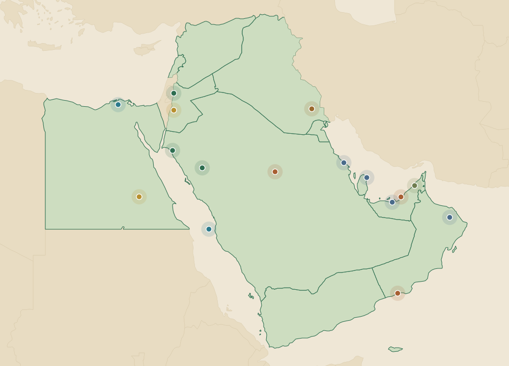

Reference prices, project tracking, and soil and geospatial data for carbon across the Middle East and North Africa. One screen for the region's fastest growing carbon market. Information only, not a trading venue.

Sifr is the Arabic root of the word zero. From zero, everything is possible. Sifr Collection is the carbon market intelligence platform for the Middle East and North Africa, built so the people deploying capital here can finally see the market clearly.
The MENA voluntary carbon market is small today and growing fast. Buyers, project developers, governments, and investors are working from scattered data, foreign benchmarks, and PDFs. We bring reference prices, project tracking, policy intelligence, and soil and geospatial data into one place.
We do not broker credits and we do not run a trading venue. We are an information platform. That independence is the point: our job is to tell you what the market is doing, not to sell you a position in it.
Indicative reference prices, regional indices, and auction outcomes for voluntary and compliance carbon across MENA. We track VCS, Gold Standard, blue carbon, and sovereign schemes so you are not guessing from foreign benchmarks. We report the market, we do not make it.
Open Terminal →Satellite-derived soil organic carbon and vegetation data for the region's arid landscapes, with NDVI and biomass tracking aligned to Verra and Gold Standard methodology. Built for MRV-grade reporting, not marketing slides.
Explore Data →A live registry of announced and active carbon projects across the region, from desert reforestation to mangrove restoration, with policy intelligence on the schemes shaping demand. Briefings written for the people deciding where capital goes.
View Projects →Prices shown are sample data while the live market feed is being connected, not real quotes. Sifr Collection is an information platform.
Arid and semi-arid soils are one of the region's most overlooked carbon stories. They hold little carbon per hectare, but MENA has a vast amount of land. Generations of overgrazing and desertification have stripped these soils, and well managed restoration can rebuild part of that stock.
The honest picture matters here. Dryland restoration sequesters carbon slowly, roughly 0.1 to 0.5 tonnes of carbon per hectare each year on grazing land, so credible measurement separates real projects from optimistic ones. That is exactly where data earns its keep.
Sifr tracks soil organic carbon using Sentinel-2 satellite data and published dryland science, aligned to Verra VM0042 and Gold Standard methodology, so a soil carbon claim can survive scrutiny.
Indicative tracked project pipeline by country. Figures reflect coverage scope, not credits traded by Sifr.
Coverage drawn from Sentinel-1/2, Landsat, and commercial imagery. 10m resolution biomass and soil carbon mapping across the MENA region, backed by a multi-decade satellite archive.
Vegetation index history, above-ground biomass stock, and annual change detection. Forest and rangeland cover dynamics with pixel-level uncertainty for MRV-grade data products.
Multi-depth soil organic carbon models calibrated against field measurements and published dryland datasets. Designed for ground-truth validation rather than satellite-only estimates.
Measurement, reporting, and verification data structured to Verra VCS, VM0042, and Gold Standard methodology. Built for project developers, verifiers, and national registries.
Whether you are a corporate buyer sizing a procurement budget, a developer benchmarking a project, or a government shaping national carbon policy, Sifr Collection gives you the MENA carbon market on one screen.
Sifr Collection works with corporates, project developers, and government bodies across the region. Tell us what you are trying to decide and we will point you at the right data, or set up terminal access.